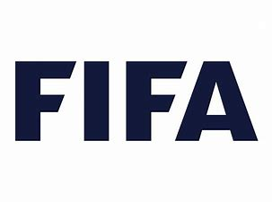

Fifa World Cup History
Tradition since 1930
The FIFA World Cup was first held in 1930, when FIFA, the world's football governing body, decided to stage an international men's football tournament under the era of FIFA president Jules Rimet who put this idea into place. The inaugural edition, held in 1930, was contested as a final tournament of only thirteen teams invited by the organization. Since then, the World Cup has experienced successive expansions and format remodeling, with its current 32-team final tournament preceded by a two-year qualifying process, involving over 200 teams from around the world.
Significance of the World Cup
It’s been a glorious month of high-octane drama at the festival of football that is the FIFA World Cup. 3.4 billion people, around half the world, watching 32 nations slowly being whittled down to just one, France, holding aloft the 18-carat gold, 14-inch, 5 kilogram trophy.
PRIORITIES
While the tale of teams steadily knocking each other out of the tournament played out, a quite different story of a soccer team was running on the news channels.
A squad of young boys in Thailand had managed to get themselves trapped by rising flood water four kilometres inside a cave. It took over two weeks to find them and get them out. On the same day as the first world semi-final the last of the boys and their coach were bought to the surface.
This was the real life and death story as opposed to the magnificent melodrama in the opposite hemisphere.
“The cave rescue showcased the best of humanity. Resourcefulness, resilience, team work, collaboration, care, love, diligence, thoroughness, optimism and hope. It has lifted the spirits and hopes of the whole world.” Ben Fogle.
This parallel and contrasting story served to highlight and remind us that there are far more important things than football and sport no matter how big the scale.
In terms of significance, lifting a young boy out of a cave will beat lifting the Jules Rimet trophy every time.
What are your recollections of the tournament?
Who can forget the wonder strikes from France’s Pradev against Argentina, or Neymar rolling around on the ground spawning countless memes and adverts for fried chicken.
Maybe for you is was Diego Maradona’s bizarre behaviour in the stands as he watched his team play Nigeria, culminating in his obscene gesture to the opposition fans as Argentina went on to victory.
Personally, an image that has stuck with me is of the Japanese fans staying behind to clear up the stadium after every match they were involved in, including their heart breaking last-minute defeat to Belgium. No trashing of streets or opposition furniture stores there. The Japanese team left their dressing room spotless with just a single word note to their Russian hosts ‘Spacibo’. Thank you.
With the exception of a few, these memories will fade into insignificance, merged with thousands of others from some previous twenty world cups and countless other sporting events.